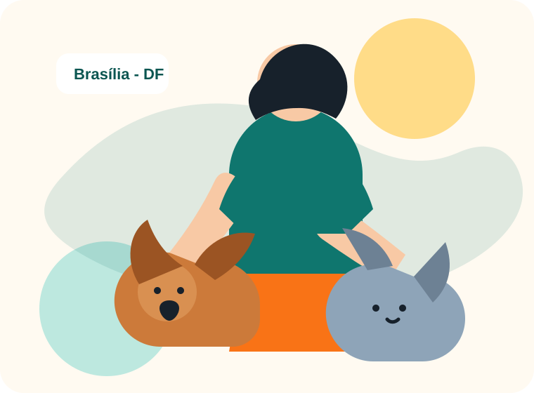
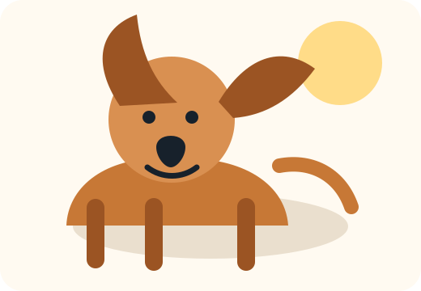
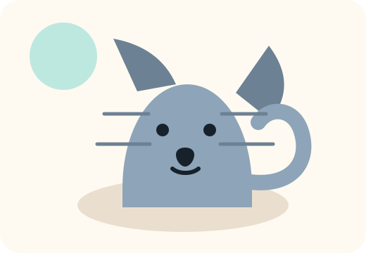
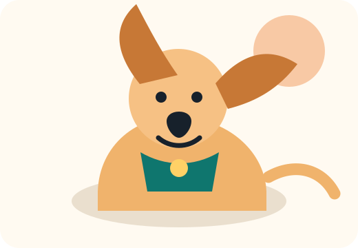
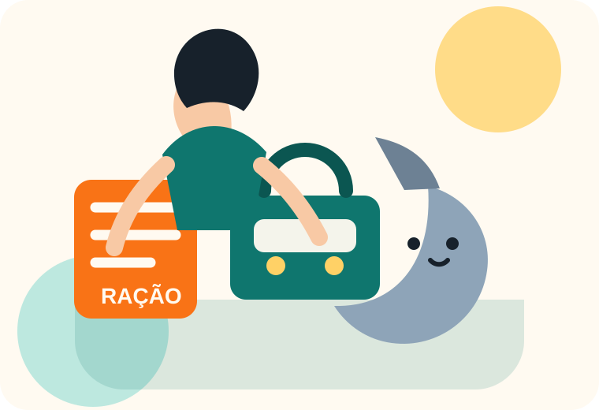

Problema
Informações espalhadas dificultam contato, doações e adoções.
Projeto acadêmico-comunitário em Brasília - DF
A Patinhas Solidárias DF organiza informações sobre adoção responsável, lar temporário, doações e orientação inicial para quem encontra um animal em situação de risco.

A iniciativa precisava de uma presença digital simples para explicar o que faz, orientar voluntários e facilitar o contato de pessoas interessadas em adoção, lar temporário ou doação.
O público principal são moradores do Distrito Federal que desejam ajudar animais resgatados, mas precisam encontrar rapidamente informações confiáveis, próximos passos e formas de contato.
Informações espalhadas dificultam contato, doações e adoções.
Moradores de Brasília, adotantes, voluntários e apoiadores.
Entrar em contato para adotar, ajudar ou tirar dúvidas.
Landing page objetiva, responsiva, com formulário simulado e CTA visível.
O conteúdo foi organizado em blocos curtos para reduzir esforço de leitura e facilitar a decisão do visitante.
Explica primeiros cuidados, segurança e como pedir apoio sem colocar pessoas ou animais em risco.
Conecta voluntários com animais que precisam de acolhimento por tempo determinado.
Apresenta animais disponíveis e orienta a adoção com compromisso, paciência e cuidado.
Mostra itens úteis, como ração, areia, cobertores, medicamentos autorizados e transporte.
Cards com informações objetivas ajudam o visitante a comparar perfis e entender o próximo passo.

Cadela dócil, porte médio, gosta de passeios curtos e se adapta bem a apartamento com rotina.

Gato tranquilo, sociável e ideal para quem procura companhia calma dentro de casa.

Filhote ativa e carinhosa. Precisa de tutor com tempo para adaptação, educação e brincadeiras.

Esta área usa JavaScript para atualizar, em tempo real, quantas formas de ajuda o visitante selecionou. A interação é simples e coerente com o objetivo da página.
Sim, desde que o ambiente seja seguro, telado quando necessário e exista rotina adequada para o animal.
Não. Para este trabalho acadêmico, o formulário faz uma validação simples e exibe uma mensagem de confirmação visual.
As imagens são leves, locais, não dependem de banco de imagens externo e carregam bem no GitHub Pages.
Preencha os campos para simular o primeiro contato. A mensagem não é enviada para servidor, porque o projeto não utiliza back-end.
Brasília - DF